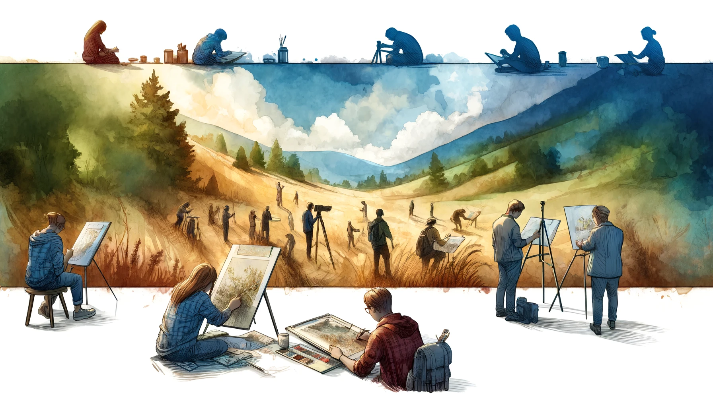
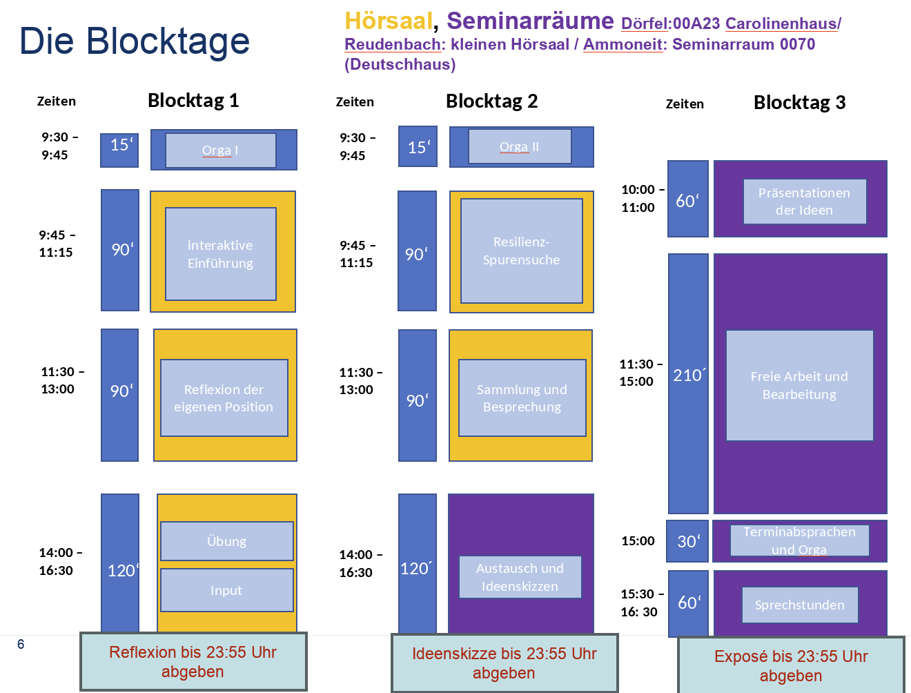

 Einführungskurs im Lehramtsstudium Erdkunde an der Philipps Universität Marburg
Einführung
Außerschulische Lernorte erlauben die unmittelbare Bearbeitung von geographischen Fachgegenständen im Realraum. In diesem Modul werden Sie im Sinne der Klimawandelbildung Lernorte erarbeiten, die resilient, adaptiv, vulnerabel oder mal-adaptiv sind und ausarbeiten, was dies für den Raum bedeutet. Ausgehend von der thematischen Erschließung werden Sie eine methodische Ausarbeitung durchführen, sodass Sie die Inhalte in einer 60 Minütigen Exkursion überführen und eine Wissensvermittlung sowie Sensibilisierung für die lokalen Gegebenheiten erzielen.
Lernziele
Sie lernen..
- vulnerable, adapative, maladpative und resiliente Orte in Bezug auf den Klimawandel in Marburg aufzufinden,
- diese Lernorte inhaltlich aufzubereiten, um Ihre Kommiliton*innen für die Vulnerabilität und/ oder Resilienz dieser Orte zu sensibilisieren
- diese thematischen Inhalte in eine 60-minütige Exkursion zu überführen, die im Sinne der Klimawandelbildung Wissen auf universitären Niveau vermittelt
- aktualitätsbezogene Geschehnisse durch Lernorte inhaltlich aufzubereiten
- und diese anschließend in eine Exkursion für Schüler*innen zu transferieren
Zudem steht an erster Stelle, selbst für den lokalen Klimawandel sensibilisiert zu werden und zu erfahren, was es bedeutet, lokale Klimawandelbildung zu stärken.
Kursmerkmale
Der Kurs ist primär für Studierende unserer Präsenzveranstaltung gedacht, eignet sich in gewissem Maße aber auch zum Selbststudium. An den Blockterminen werden wir die inhaltliche Grundlage erarbeiten sowie die Exkursionen für die semesterbegleitende Lehre weitesgehend vorbereiten. In der semesterbegleitenden Lehre werden diese dann an ca. 10 Terminen (jede Woche eine) durchgeführt. Die zwei bis drei Sitzungen am Ende dienen einer übergeordneten Reflexion sowie der Vorstellung der Prüfungsleistung.
Gruppenarbeit und Gruppenbildung
Am 2. Blocktag werden wir 3er-Gruppen bilden. In diesen werden Sie sich sowohl das Exkursionskonzept zur inhaltlichen Exkursion in der semsterbegleitenden Lehre erarbeiten (Studienleistung) sowie anschließend einen Projektbericht verfassen, welcher das Konzept didaktisch für die Schule aufbereitet (Prüfungsleistung).
FAQs
Wir werden versuchen, spezifische Fragen im Laufe einer Woche zu beantworten. Häufig auftretende Fragen und Probleme (auch aus den vergangenen Semestern) werden wir im Bereich FAQs auf dieser Webseite aufbereiten und für alle TeilnehmerInnen zur Verfügung stellen.
Kurszeiten
- Dienstag 10-12 Uhr (Dörfel)
- Donnerstag 10-12 Uhr (Ammoneit)
- Donnerstag 14 -16 Uhr (Reudenbach)
Ablauf Block

Team
Viel Spaß in unserem Kurs und beim Lernen an der Universität Marburg!